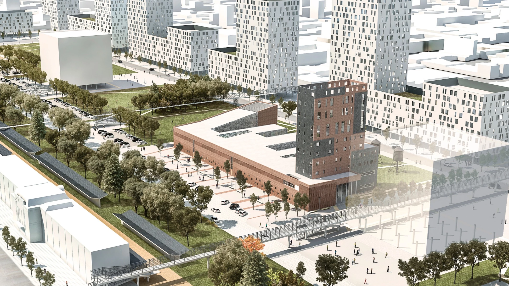

PROYECTO
Tesis de Grado - Transformador Social Educación alternativa + Emprendedorismo Autor Arqto Guillermo Asis Luciano Director de tesis Arqto Diego Schmukler Cátedra Arquitectura VI B FAUD UNC




Tesis de Grado - Transformador Social Educación alternativa + Emprendedorismo Autor Arqto Guillermo Asis Luciano Director de tesis Arqto Diego Schmukler Cátedra Arquitectura VI B FAUD UNC